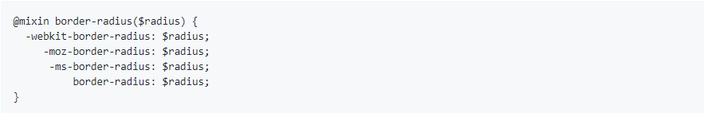
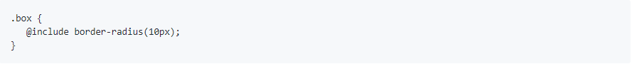
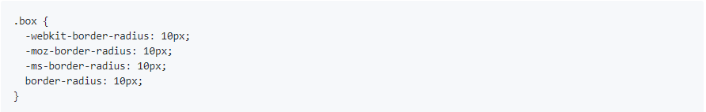
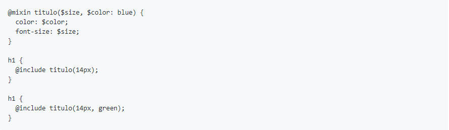
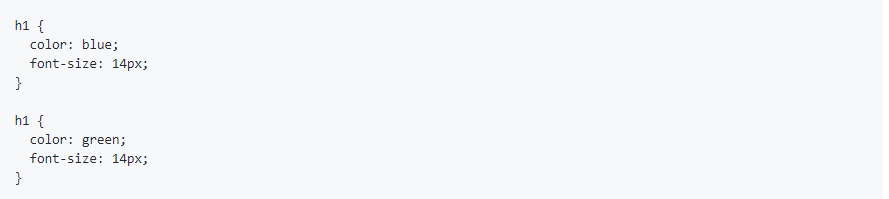
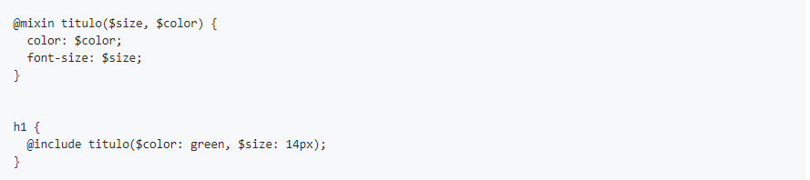
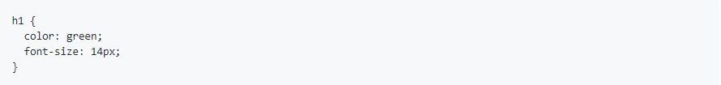
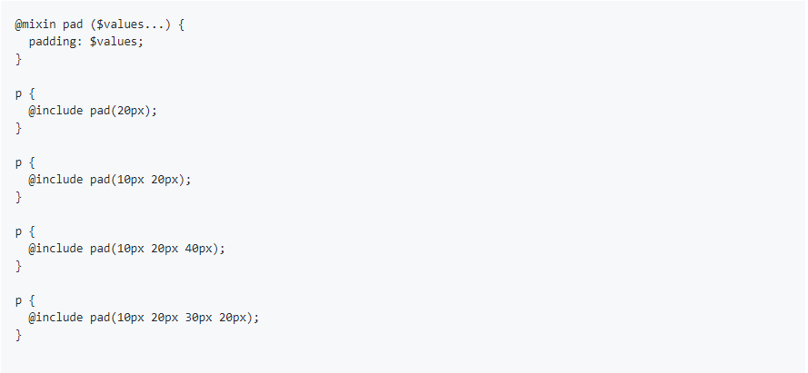
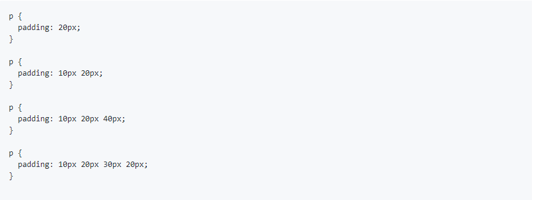

A diretiva @mixin permite definir estilos que podem ser reutilizados em toda a folha de estilo. Os mixins funcionam como uma função que retorna CSS em vez de um único valor. Muitas vezes temos declarações repetidas várias vezes no arquivo CSS, para corrigir isso, pode-se criar um mixin.
A declaração do mixin começa com @mixin, em seguida vem o nome do mixin, que pode conter qualquer combinação de caracteres alfabéticos e numéricos sem espaços e os argumentos entre parênteses. O mixin border-radius utilizado como exemplo, só possui um argumento $radius, mas pode-se utilizar vários argumentos desde que eles estejam separados por vírgulas. Por fim, entre chaves vem a definição do mixin que conter qualquer combinação de atributos CSS.
Com este mixin criado, não será mais necessário repetir as 4 linhas de código utilizadas para que o border-radius funcione em todos os navegadores.
Para utilizar o mixin, basta utilizar a palavra @include, o nome do mixin e os argumentos na ordem utilizada na declaração.
Sass
Será compilado para:
Na criação do mixin é possível especificar valores padrão para os argumentos, caso o argumento seja passado um argumento diferente o argumento será utilizado, caso contrário o valor padrão será utilizado.
Exemplo:
Será compilado para:
Keyword Arguments existem a partir Sass 3.1, com os Keyword Arguments, os argumentos ficam explícitos na chamada do mixin e é possível utilizar os argumentos em qualquer ordem.
Exemplos:
Será compilado para:
Embora fique redundante, esta forma pode facilitar a leitura dos mixins, o que é importante para ter um código de fácil manutenção.
Às vezes é necessário criar um mixin mais flexível, por exemplo, o padding por exemplos pode ter de um a quatro argumentos. Neste caso pode-se criar um mixin de argumentos variáveis, desta forma os argumentos são empacotados como uma lista.
Exemplo:
Será compilado para:
